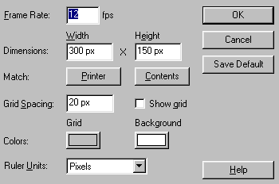

Making smooth animations


Animation can become choppy and slow. This is often because of the use of too many CPU intensive operations simultaneously. If this is not the case, then this is your solution.
Step 1. Create your animation.
Step 2. Add many frames between the start and ending keyframes.
Step 3. Now you have smooth animation, but it's too slow!
Step 4. Press CTRL + M, and this window should popup:

Step 5. Notice the frame rate. This is the one we wan't to change. Type 20 instead of 12. Now your animation runs smooth and fast.
Note: Older computers can have problems on running high framerates, so i would recommend and FPS of 20 only for users that are certain that their site doesn't use too many CPU intensive operations. Also i wouldn't recommend anyone to go above 20 FPS.
Easing animation
The easing feature is also a powerfull tool in creating smooth animation.
Easing in: Starts the animation slowly, then accelerates near the end.
Easing out: Starts the animation quickly, then decelerates near the end.